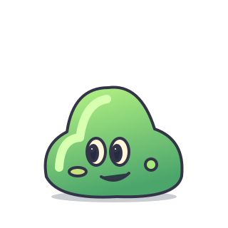
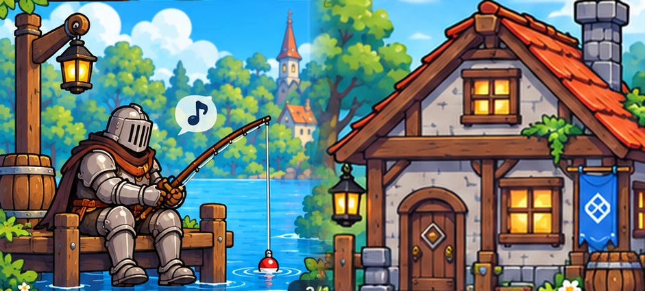
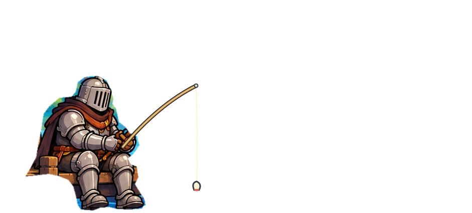
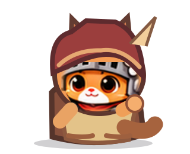

01 · Монстры — 8 видов, 6+6 кадров
У каждого вида собственная атака и реакция на удар. Коронованные боссы сохраняют ту же анимацию, а корона закреплена на персонаже.
Слизень · прыжок

1 / 6
02 · Человек-рыцарь — рыбалка в 10 кадрах
Только взрослый рыцарь. Поклёвка → подсечка → леска натягивается → рыба вылетает из воды → опускается в отдельное SVG-ведро.


1 / 10
Тихо ждёт поклёвку
03 · Кот-торговец — 10 кадров
Торговец использует глаза и мордочку основного Храбролапа. Жесты: приветствие, показать товар, принять рыбу, взвесить, заплатить и попрощаться.

1 / 10
Ждёт покупателя
Статус: технический арт-прототип. В игровом проекте подключены кадры монстров, смена кадров торговца, показ 10 кадров рыбалки и сердечки здоровья врагов. Анимации котёнка, отдельные SVG-мечи, броня, баланс и сохранения не менялись. Для приёмки художественного качества потребуется согласование.